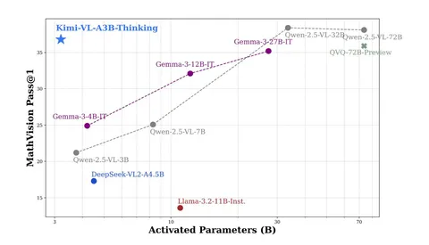

Сегодня разбираем статью про Kimi-VL — yet another VLM, интересная тем, что умеет понимать очень длинные контексты, активируя всего 2,8B параметров. Это не мешает ей получать результаты лучше, чем Qwen2.5-VL-7B, and Gemma-3-12B-IT и даже GPT-4o-mini на некоторых тасках.
Kimi-VL под силу контексты размером в 128K токенов и работа с изображениями разного разрешения — для этого у неё под капотом специальный визуальный энкодер. Авторы говорят, что они разработали две версии нейросети: обычную и thinking, которая кроме всего вышеперечисленного справляется с reasoning — длинными рассуждениями. На картинке — сравнение Kimi-VL с другими популярными нейросетями: сколько параметров активируется на бенчмарке MathVision.
Авторы считают, что будущее — за MoE и CoT (как у DeepSeek и других LLM), а плотная архитектура, которую использует большинство опенсорс-VLM (например, Qwen2.5-VL и Gemma-3), устарела.
Kimi-VL, по их словам, догоняет по способностям LLM. На основе SigLIP-SO-400M они создали собственный визуальный энкодер — MoonViT. Он может обрабатывать картинки разного разрешения: по аналогии с текстовыми последовательностями разбирает их на батчи, вытягивает и превращает в 1D-векторы. Чем выше разрешение — тем больше векторов в последовательности. Каждый батч локализуют по ширине и по высоте. Энкодер и LLM соединяет двухслойный MLP.
Для претрейна используется много текстовых данных: судя по всему, именно это позволяет активировать меньше параметров для её работы. Само обучение состоит из нескольких частей:
1. Предобучение энкодера ViT (2T + 0,1T токенов): MoonViT обучается работать с картинками на парах изображение+текст.
2. Joint Pre-training (1,4T токенов). Модель тренируется обрабатывать запросы на чисто текстовых данных.
3. Joint Cooldown (0,6T токенов). Оптимизация производительности модели: обучение на высококачественных языковых и мультимодальных наборах данных.
4. Joint Long-context (0,3T токенов). Увеличение длины контекста модели с 8K до 128K. Чтобы модель лучше понимала длинный контекст и одновременно хорошо работала с коротким, на каждом подэтапе этой стадии обучения авторы фильтруют и увеличивают соотношение длинных данных до 25%.
Хотя текущая модель эффективно справляется со многими стандартными задачами, она всё ещё слишком мала для решения узкоспециализированных задач. Возможности рассуждений Kimi-VL ещё не достигли теоретического максимума, особенно для сложных задач, требующих многоступенчатых выводов или более глубокого контекстного понимания. Путь к преодолению этих сложностей — масштабирование модели и совершенствование алгоритмов обучения (в том числе обогащение и увеличение тренировочных датасетов).
Разбор подготовила
CV Time
